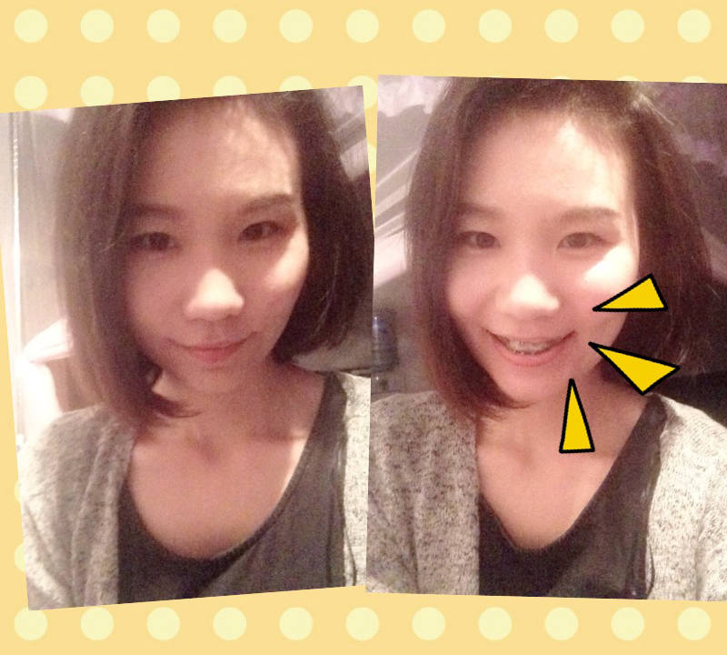
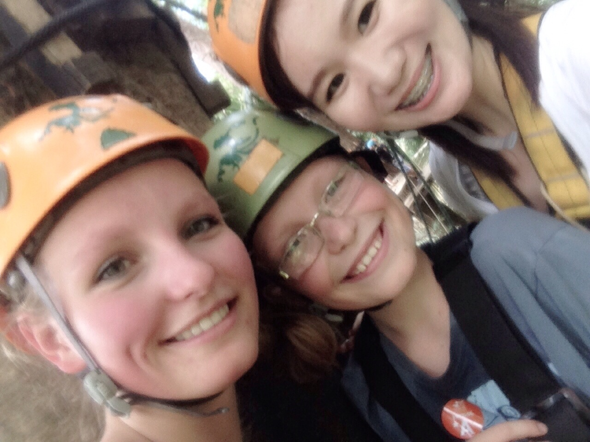
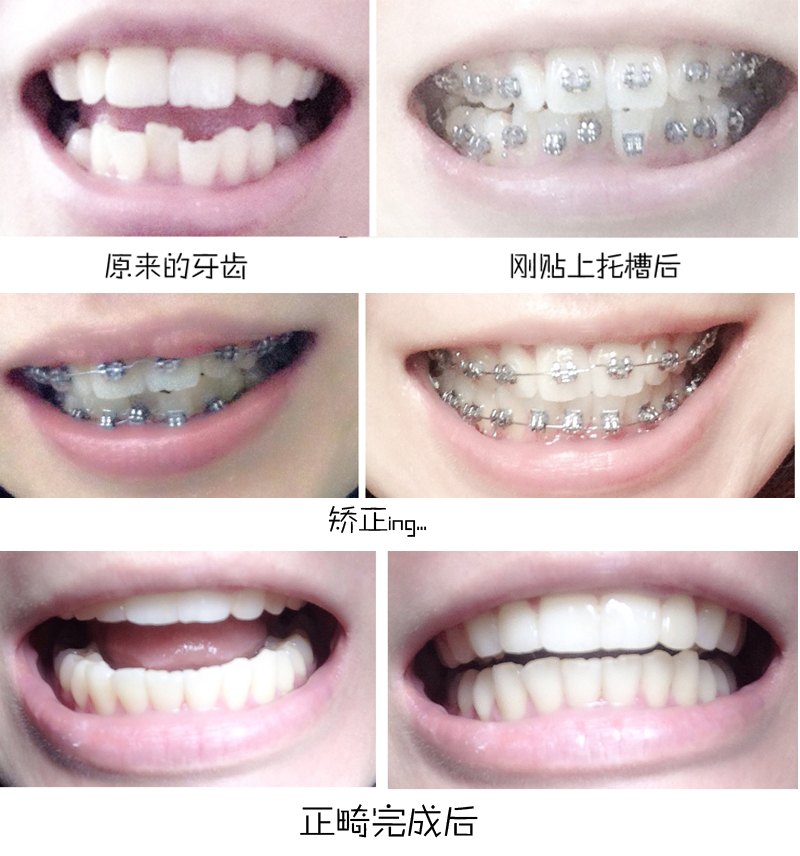

正文: 我做过两次正畸，第一次是在中学时期，当时做的原因是上排牙有一个牙齿特别歪，相对正常角度几乎扭转了近90度。我觉得很不好看，就要我妈带着我去医院戴上了牙套。那时什么也不懂，只知道按照医生的要求一个月按时复诊一次。中学时期的我戴着牙套心态不太好，甚至有点自卑，觉得非常难看，于是没有留下一张露牙齿的照片。熬过了一年，终于忍到拿下了牙套的时候，之后也没有认真戴保持器。上大学后，又长了智齿，结果可想而知——反弹了，甚至下排牙齿比原来还要乱。
随着牙齿变形得越来越厉害，我慢慢有了第二次正畸的想法，但是很难下决心。首先，自己不再是当年那个10多岁的中学生了，我担心自己的年龄偏大；其次，自己已经走上工作岗位，一口钢牙也许会影响形象；还有，牙齿的整齐到底是不是这么重要？我也在思考。别人也许不会关注，或许只是自己过于在意而已。
但是，我还是下定决心再次戴上牙套。因为我后来才知道正畸不仅可以让牙齿整齐，更重要的是可以建立稳定的咬合关系。整齐的牙齿更容易清洁干净，可以保持它的健康。
我在26岁开始度过了412天的钢牙时光，戴着牙套讲课，戴着牙套旅行；戴着牙套拍了婚纱照和举行婚礼，戴着牙套度了蜜月。回想起来，这段时光却是一段很特别的回忆。因为相比第一次，拍照都完全不敢露牙的我，心态已经调整好了。
心理上最重要的转变是在我第一次背包去泰国旅行，在泰国见到许多戴着牙套的年轻人，几乎每个人都没有去刻意遮掩。而且他们还喜欢在托槽上绑着五颜六色的皮筋作为装饰，说话和笑时会刻意让牙套都露出来，让人感觉这好像是一种美。在泰国的见识对我的心理冲击很大。我也开始思考，牙套真的那么不好看吗？ 还是只是自己的心理影响而已？
 ▲水灯节当晚拍到的牙套女孩，我承认被她的笑容迷住了。
▲水灯节当晚拍到的牙套女孩，我承认被她的笑容迷住了。
所以后来决定做正畸后，在托槽的选择问题上，我知道陶瓷托槽相对金属托槽来说较隐形、更美观，但我依旧毫不犹豫地选择了金属托槽。因为我已经不觉得所谓的钢牙不好看了，其实只要放平心态，它只是人生经历中的一个纪念而已。我告诉自己，要告别曾经一张牙套照片都没有留下的过去，要拍好多照片，要好好享受第二次的正畸过程。
▲刚戴上牙套时，好像不知道该怎么笑了
▲在国外和一对可爱的姐弟的合影，发现他们的牙齿也很整齐
我甚至还默默决定，要戴着牙套再去一次泰国，而这个决定也在蜜月期间实现了。
▲和泰国牙套妹子的合影，看人家多从容自信
▲我的牙齿变化
虽然经过了两次正畸，但我的牙齿仍然是不完美的。重要的是，我在正畸过程中，不断学习护牙的知识，慢慢爱上口腔护理，不断提醒身边的人要关心和爱护自己的牙齿。一口整齐的牙齿不仅美观，更是方便清洁。其实到了正畸后期，我最在乎的反而不是整齐了，牙齿的功能、咬合的稳定才是最重要的。最后，小结几点注意事项吧：
1、不要轻信烤瓷牙、美容冠等所谓“快速矫正”的方法，保留自己的好牙齿才是最重要的；
2、如果在犹豫是否要做正畸，去给正规口腔医院正畸科或者公立三甲医院口腔科的正畸专业医生检查，以医生当面诊断为准，有条件做的话就尽早做，早做完早受益；
3、功能是第一位，美观才是第二位的，稳定的咬合关系非常重要；
4、戴牙套并没有想象的那么丑，很多时候其实是自己在意而已，别人并不会注意那么多；
5、正畸期间对牙齿的护理非常重要，否则到时牙齿虽然整齐了，但是因为没有注意口腔护理牙齿受到其他损伤，就得不偿失了；
6、取下托槽后，一定一定一定要认真佩戴保持器，尤其是头半年必须24小时除了吃饭都要佩戴，否则非常容易反弹，成年后正畸最好是终身保持。
7、完成正畸后也要坚持日常护理：每天至少刷牙两次（巴氏刷牙法），饭后漱口，睡前使用传统牙线，半年洗牙一次，定期回医院复诊。